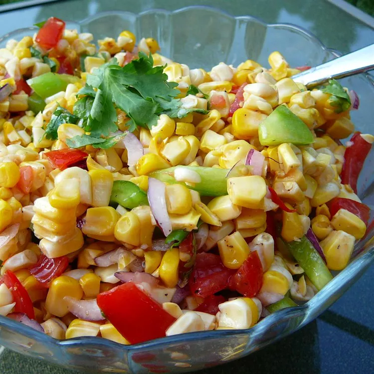

Home
Grilled Corn Salad

Description
This grilled corn salad made with roasted corn, garden-fresh vegetables, and cilantro makes the perfect side dish for any BBQ or hot summer day.
Ingredients
- 6 ears freshly shucked corn
- 1 medium green bell pepper, diced
- 2 medium Roma (plum) tomatoes, diced
- ¼ cup diced red onion
- ½ bunch fresh cilantro, chopped, or more to taste
- 2 teaspoons olive oil, or to taste
- salt and ground black pepper to taste
Steps
- Preheat an outdoor grill for medium heat and lightly oil the grate.
- Roast corn on the preheated grill, turning occasionally, until tender and specks of black appear, about 10 minutes. Remove from the grill and let sit until just cool enough to handle, 5 to 10 minutes.
- Holding a corn cob over a large bowl, use a knife to carefully slice warm kernels directly into the bowl; discard cob. Repeat with remaining corn.
- Add bell pepper, tomatoes, onion, cilantro, olive oil, salt, and pepper; toss until evenly mixed. Let sit until flavors have blended, at least 30 minutes.
Not sure what else to serve with grilled corn salad
Check out our collection of best sides to serve with grilled corn salad. Here are a few of the top-rated ideas you’ll find: